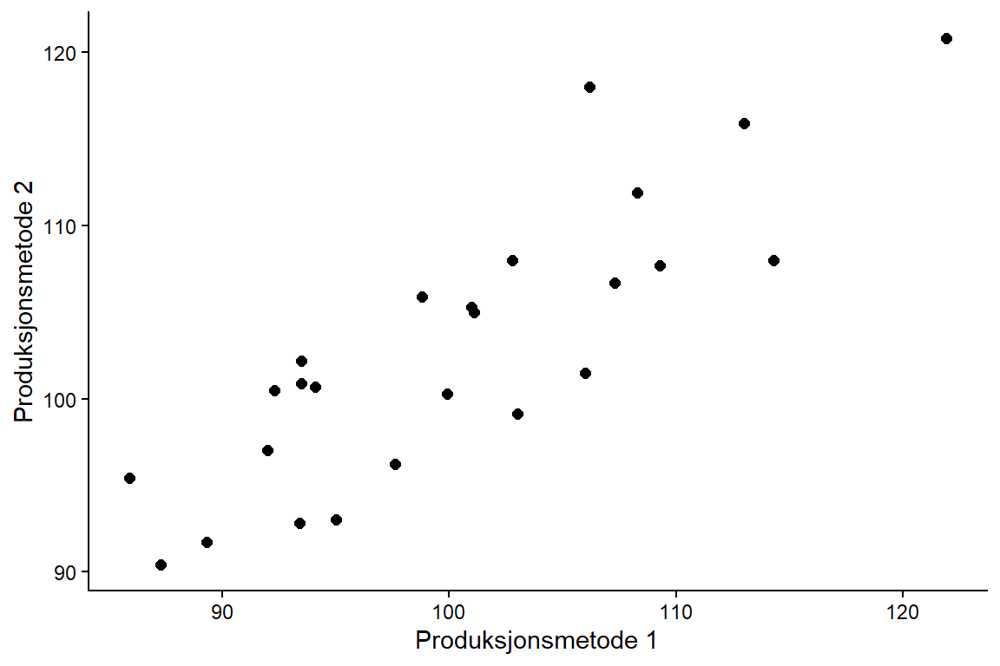
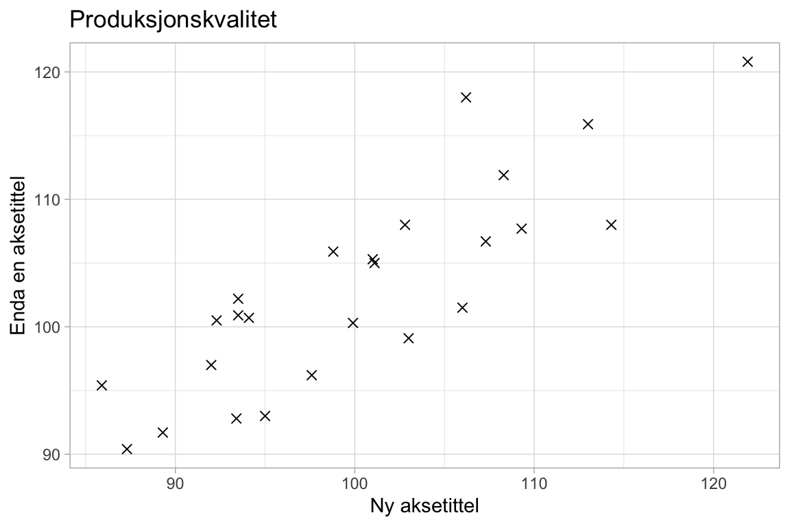

1.11 Oppsummering og ekstra oppgaver
I denne modulen har vi gått gjennom noen helt grunnleggende funksjoner i R. Du har lært at
- R er navner på et programmeringsspråk,
- RStudio er navnet på et program der vi kan skrive og kjøre R-kode, og
- identifisert fire forskjellige vindu i RStudio: konsollen (der R-koden kjøres), teksteditoren (der vi skriver script), samt to vinduer der vi kan se en oversikt over hva som er i dataminnet og få opp plott og figurer som vi lager.
Videre har du
- kjørt noen enkle kommandoer,
- lagret tall og vektorer ved hjelp av variabelnavn,
- prøvd ut noen innebygde R-funksjoner for å regne ut f.eks. gjennomsnitt og standardavvik av tallvektorer,
- laget et spredningsplott,
- lært hva et working directory (arbeidsmappe) er, og
- installert R-pakker, f.eks
readxlsom vi brukte den til å lese inn et lite datasett i R.
Til slutt har du
- kjørt en \(t\)-test,
- skrevet et script (et lite program om du vil) der vi har lagret flere av kommandoene over i en tekstfil, og
- lært om pipe-operatoren og enkel datavask ved hjelp av funksjoner i
dplyr-pakken.
Dersom du har fulgt modulen selv har du nå kanskje skrevet et lite script i tekstvinduet som ser ut omtrent som koden under. Når du har gjort alt riktig, skal du nå kunne kjøre gjennom disse kodelinjene uten feilmeldinger ved hjelp av Ctrl-Enter.
Dette er helt grunnleggende (Spør om hjelp! Gi hjelp!). Har du problemer her, sørg for å få dem ordnet. Spør først en medstudent om hjelp, og deretter eventuelt studentassistent eller foreleser. Studenter som har god erfaring med data og/eller programmering, kan lære mye av å hjelpe medstudenter løse feilmeldinger.
# Introduksjon til R
# -------------------
# Laster inn nødvendige pakker
library(readxl)
library(ggplot2)
# Laster inn datasettet
testdata <- read_xls("testdata.xls")
# Gjør t-testen til spørsmål F i den første dataøvingen
testresultat <- t.test(testdata$X1,
testdata$X2,
var.equal = TRUE,
alternative = "two.sided")
# Skriver ut resultatet av denne t-testen
testresultat
# Lager et plott av variabelen X1 mot X2
p <- ggplot(testdata, aes(x = X1, y = X2)) +
geom_point()
# Lagrer plottet
ggsave("testplot.pdf", plot = p)Lagre scriptet ditt. I RStudio velger du
File -> Saveog trykkerOkdersom det kommer opp et vindu om character encoding e.l. Finn en fornuftig plassering (gjerne i samme mappe som øvelsesdatasettet) og gi filen et fornuftig navn. Standard filending for R-script er.R, men det er skjult for de fleste Windowsbrukere. Lukk RStudio.Du kan nå åpne skriptfilen i RStudio igjen. Enten ved å dobbeltklikke på den, eller ved å åpne RStudio, velge
File -> Open file, og så videre (dersom skriptet ikke allerede ligger åpnet). Du kan også åpne skriptfilen i en hvilken som helst notatbok (Notebook e.l.) og se at det er en helt standard, ren tekstfil. Hva er fordelen med å lagre en analyse som et skript versus å gjøre ting i et menydrevet grafisk grensesnitt?
Løsning
Når vi lagrer koden vår i et skript sørger vi for at hele analysen vår er lagret, ikke bare resultatene. Med andre ord, dersom du på et senere tidspunkt ønsker å komme tilbake til et analyseprosjekt og gjøre noen enkle forandringer, så er det fort gjort å gjøre det i skriptet, og så kjøre hele analysen på nytt. Dersom du i stedet hadde brukt et menydrevet system for å gjennomføre analysen (pek og klikk) kunne du risikere å måtte gjøre alt sammen på nytt (hvis du da husker hvordan du gjorde det), fordi du ikke like enkelt kan lagre hvert eneste museklikk.
- Vi skal nå pynte på plottet og gjøre det riktig pent. Det gjør vi ved å legge til nye linjer i ggplot-kommandoen. Erstatt den nest siste linjen i skriptet med kommandoen under, og se at du får en figur omtrent som den som følger under det igjen (vi bruker aksetitler i henhold til oppgavene i den første datalabben, der vi får vite at datasettet representerer kvalitet på kaffeavlingen før og etter en omlegging i produksjonsmetode):
ggplot(testdata, aes(x = X1, y = X2)) +
geom_point(size = 2) +
xlab("Produksjonsmetode 1") +
ylab("Produksjonsmetode 2") +
theme_classic()
Merk at vi bruker “+”-tegnet til å legge til flere “lag” med grafiske egenskaper til plottet. Hvert “lag” består av en funksjon, som ofte kan ta argumenter; f.eks. brukes funksjonen
geom_point()til å lage prikker, og så kan vi f.eks. bruke argumentetsizetil å styre størrelsen på prikkene. Kan du finne ut hva hvert enkelt av disse “lagene” gjør? Hint: ta bort en linje av gangen, og se hva som skjer. Pass på at det er et pluss mellom hvert lag.Prøv å endre på noen av lagene eller legg til nye. For eksempel kan du lage en tittel ved å legge til funksjonen
ggtitle()som et lag, og du kan endre aksetitlene. Prøv også å bruke argumentetshapeigeom_point()til å bytte ut prikkene med en annen form. Det finnes flere andre “tema” i tillegg tiltheme_classic(), f.eks.theme_bw(),theme_dark(), etc.
Forslag
Prøv for eksempel dette:
ggplot(testdata, aes(x = X1, y = X2)) +
geom_point(size = 2, shape = 4) +
ggtitle("Produksjonskvalitet") +
xlab("Ny aksetittel") +
ylab("Enda en aksetittel") +
theme_light()
- Det følger med omfattende dokumentasjon med
R. Du kan lese om alleR-funksjoner ved å skrive?før funksjonsnavnet i konsollen. Prøv for eksempel å skrive?meani konsollen og trykk enter.